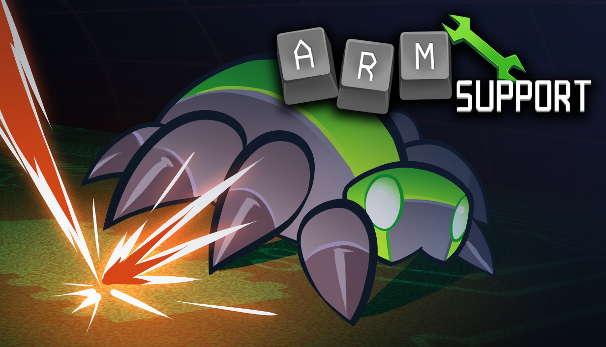
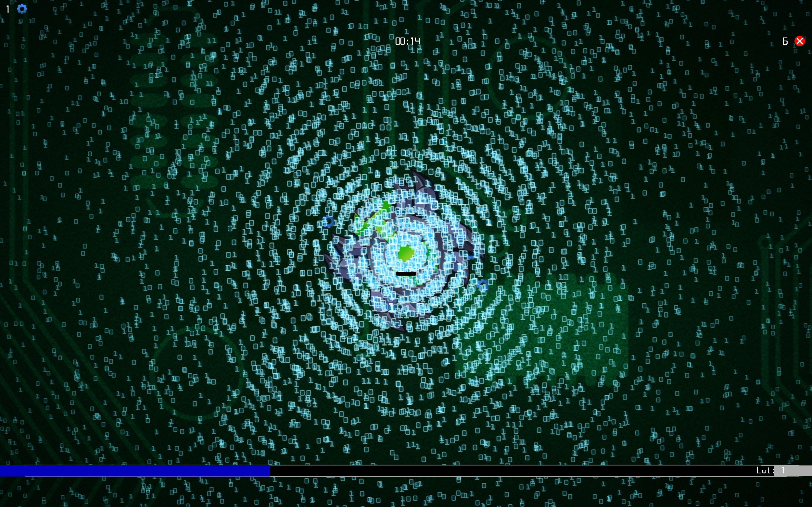
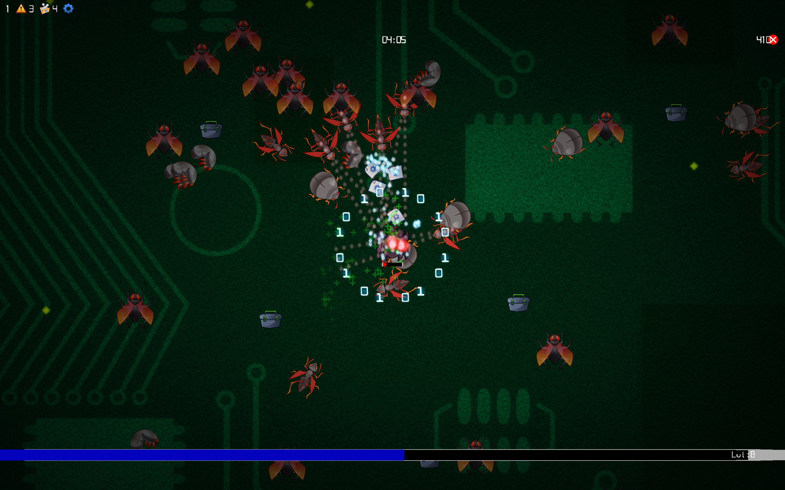

Custom C++ engine · FMOD
ARM Support
ARM Support is a custom C++ engine game developed across two semesters with four other programmers, using FMOD as its audio middleware.
I was the sole audio programmer and the team’s producer.
Responsibilities
- Creation of the audio engine
- Creation and implementation of all audio assets
- UI programming
- Task tracking and ensuring task relevance
- Conflict resolution

Audio Engine — C++ System
As the audio programmer on a custom C++ engine game, my main task was getting the audio engine up and running. Through this project I learned extensively about messaging systems and the audio pipeline for game engines.
The audio engine uses a lookup table, so when an enemy plays its death sound, the engine only needs to retain a single instance. This reduced redundancy and used memory efficiently.


Production Experience
As the producer for ARM Support, one priority was ensuring everyone had a relevant task and planning ahead so teammates did not encounter blockers.
I also supported team health by resolving conflicts and managing scope to prevent burnout.